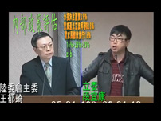
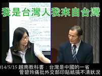
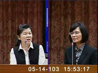
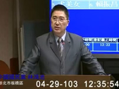
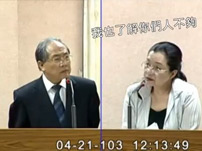
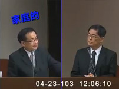
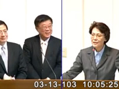

國會調查兵團最新調查報告 周倪安越南排華防身貼紙pk戰（2014-05-15 ） 2014-06-11 段宜康質詢經濟部服貿不敢公布研究報告（2014-05-21） 2014-06-11  段宜康質詢王郁琦服貿不敢揭露民調資訊（2014-05-21） 2014-06-11  管碧玲痛批外交部印貼紙搞不清楚狀況（2014-05-15） 2014-06-11  潘維剛超扯失言，越南排華事件護航舉例失當（2014-05-14） 2014-06-11 管碧玲質詢王郁琦搞不清楚貨貿開過幾次會（2014-05-05） 2014-06-11  林鴻池之核四矛盾大對決（2014-04-29） 2014-06-11  田秋堇質詢原能會：人不夠錢不夠如何監督核四？（2014-04-21） 2014-06-11 潘維剛：「我們可以不遵守現在的憲法」（2014-04-17 ） 2014-06-11  許添財揭露消防黑幕（2014-04-13） 2014-06-11  黃昭順質詢陳保基粽子與物價問題（2014-03-13） 2014-06-11